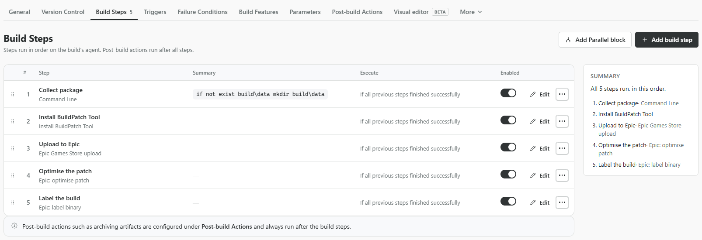

Publish a build to the Epic Games Store
Package your game, upload it to Epic as a new binary, make the update smaller and put it live, all in one build.
Before you start
- An Epic Games Store credential with your client ID, client secret, organization ID, product ID and default artifact ID. See Epic Games Store credential.
- The BuildPatch Tool uploaded under Manage › Tools › BuildPatch Tool, so an agent can get it.
- A Windows agent that builds your game. The build must leave a packaged game folder, for example
build/WindowsPackaged. See Build an Unreal Engine game from Perforce. - The permission Epic Games Store / Set Live for whoever starts the build.
Steps
Add the Epic steps after the packaging step
- Open the build configuration that packages the game, then Settings › Build steps.
- Click Add build step, type
BuildPatchand choose Install BuildPatch Tool. Keep From Buildspawn. Move this step above the others if you like: it only needs to run before the first Epic step. - Click Add build step again and choose Epic Games Store upload.
- Pick your credential, for example
Epic Store (Skyforge). - Set Build root to
build/WindowsPackaged. - Set Build version to
1.4.${BUILD_NUMBER}-Windows. It must be new every time, so keep the build number in it. - Set Launch program to
Skyforge.exe. - Choose Everything except these and list
W"*.pdb"to leave out debug files.

Make the update small and put it live
- Add Epic: optimise patch. Set From version to the version that is live now, for example
1.3.2-Windows. Leave To version alone: it is the version just uploaded. - Add Epic: label binary. Keep Action on Label, Label on Live and tick Windows.
- Click Save.
Do not put the label step in the same build when you want a person to approve the release. Run upload and optimise on every build, and keep the label step in a separate build configuration that someone starts when the release is approved. Type the version in its Build version field.

Run it
- Click Run.
Check it worked
- The log shows Epic: access check: ... version ... is new, then the upload, then Epic: Step output EPIC_BUILD_VERSION = ....
- The label step prints Epic: label Live for Windows, version ... and EPIC_LABELLED = true.
- The metadata file
epic/metadata-...jsonis under Artifacts. - In the Epic Developer Portal the binary is active and live for Windows.
Troubleshooting
| Problem | What to do |
|---|---|
| Version ... already exists | The version must be new for the artifact. Keep ${BUILD_NUMBER} in Build version. |
| BuildPatch Tool was not found on the agent | The Install step is missing or ran on another agent. Add it to this build, or set the BuildPatch Tool folder. |
| Epic refused the label | Your organization may use self-service publishing. Set Publishing to Self-service on the credential and assign the platform in the Developer Portal. |
| The launch program is not in the build root | Check the folder the packaging step made, and the spelling of the program. |